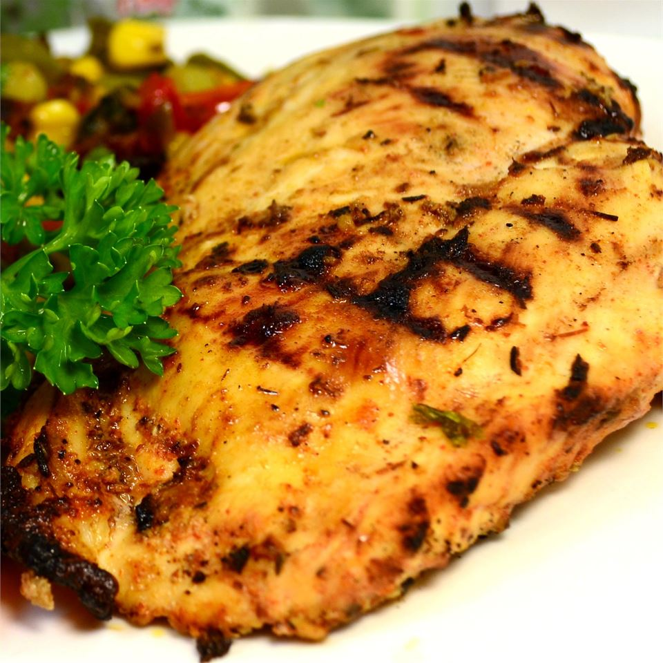

Cajun Chicken Recipe

Description
This Cajun chicken recipe with the best seasoning gives you a crispy browned crust on the outside and a tender juicy inside.
Spices like oregano, thyme, paprika, and garlic powder, and a bit of added heat from the cayenne and red pepper flakes, make this a spice so
flavorful that even your kids will love!
Ingredients
- 2 cups vegetable oil
- 2 tablespoons Cajun seasoning
- 2 tablespoons dried Italian-style seasoning
- garlic powder to taste
- 2 tablespoons lemon pepper
- 10 skinless, boneless chicken breast halves - pounded to 1/2 inch thickness
Steps
- In a large shallow dish, mix the oil, Cajun seasoning, Italian seasoning,
garlic powder, and lemon pepper.
Place the chicken in the dish, and turn to coat
with the mixture. Cover, and refrigerate for 1/2 hour.
- Preheat the grill for high heat.
- Lightly oil the grill grate. Drain chicken, and discard marinade.
Place chicken on hot grill and cook for 6 to 8 minutes on each side, or until juices run clear.
Back to the main page